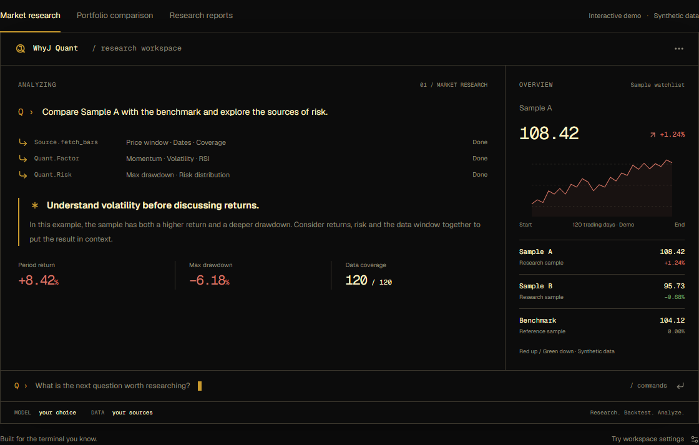

01 / Research before conviction
Think in
Signals.
把量化研究留在一个终端里。
让数据、计算与判断有迹可循。
02 / The daily workflow
今天的分析，明天还能接着做。
01 — PREPARE
配置 · 观察
检查模型与数据连接
维护标的和观察组
02 — RESEARCH
分析 · 比较
明确区间、基准与币种
读取来源、假设和缺项
03 — RETURN
报告 · 恢复
保存当时的输入与结果
从原分支继续研究
03 / One visual language
金色组织界面，红绿解释数据。

与官网、README 共用的交互演示快照，含合成数据。默认场景为 Market research、Overview 开启、红涨绿跌；这不是 CLI 或实体终端截图。已同步 DESIGN 的暖黑、奶油白与克制金色。
04 / The ownership decision
复用 Pi 的循环，维护研究的语义。
精确依赖 / 自有会话会话由 WhyJ 承接
JSONL 分支、操作状态、压缩与研究恢复。
CLI / TUI输入与展示
WhyJ runtime端口组装与领域生命周期
Pi kernelLoop / Provider
05 / Configuration is runtime state
保存成功，还要问哪条请求成功。
Settings、Doctor、Agent
共享连接配置，各自证明不同的事。
Model：Save / Save & Verify
Market Data：Check data → Save verified
PROBE指定 provider / endpoint 核实权限
06 / Two clocks, one honest result
刚刷新，不等于行情刚更新。
刷新有生命周期
请求预算、取消、渐进发布与迟到结果隔离。
缺失与陈旧可辨认
无行情显示 --，回退保留来源与日期。
07 / Facts survive the summary
压缩的是对话，不是事实的依据。
交流摘要可以有损。
研究事实必须有来源。
任务对象、参数、数据引用与报告版本
从原分支投影，按支持的规则核验。
Conversation显示原文 / 有损摘要
Research state任务 / 参数 / 数据 / 缺项
Fixed inputs不可变归档 / 固定报告版本
08 / A counterexample changed the priority
测试全绿，账本仍可能算错。
历史反例 / 已有修复1000 股，价格 100 → 110。
零费用，初始资金 100000。
持仓增加的价值应为 10000。
独立账本揭露了权益递推的问题。
人工账本与修复后末值110,000
修复前末值 · 四舍五入显示111,000
09 / Capability must be earned
知道一个工具，不等于可以使用它。
01 — DECLARED
已声明
注册表给出名称与 schema
不是权限或服务可用证明
02 — READY
已具备条件
依赖、版本、文件回执
按当前模式逐项检查
03 — VERIFIED
已验证结果
计算、证据与解释
分别保留检查范围
10 / Assemble around the research
围绕一项研究，装配可用能力。
已有宿主契约目标、数据、工具、证据
由 Quant Harness 连接。
WhyJ Extension API 管资源生命周期。
完成条件来自可核验的结果。
Research task目标 / 对象 / 约束
CapabilitiesData / Tools / Skills
Evidence版本 / 参数 / 结果 / 缺项
11 / Know the boundary
已有能力，不等于无限承诺。
RESEARCH研究闭环
观察组合与比较
固定报告与年报
结构化恢复
ADAPTERS模块接口
WhyJ 扩展宿主
Alpha / AKQuant
执行端口与边界
VALIDATION继续核验
模型解释质量
真实权限与账号
实体终端体验
EXECUTION执行范围
当前先保留接口
真实服务另行接入
实盘尚未接通
12 / Start with one question
Research.
Then decide.
bun install
bun run src/index.ts
在项目根目录启动，再按手册配置连接。
先核对数据，再读取结论。
保存这次研究，理解它的边界。
公开演示不填写真实凭证或账户。
真实研究会产生模型与数据服务用量。